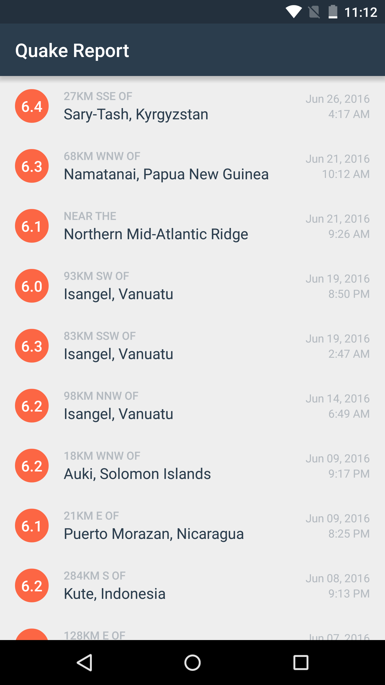

21. Empty State of the List
Empty State of the List
Question:
Start Quiz:
Solution:
Here are the changes you need to make in order to show the empty view.
For the first task, we modify the earthquake_activity layout. Instead of a single ListView, we add a parent RelativeLayout, because it allows children views to overlap each other. The first child is the ListView, with width/height match parent, to take up the full screen. The second child is a TextView, which will be the empty view. The TextView has height and width wrap_content, and we center it vertically and horizontally within the parent with the attribute
“android:layout_centerInParent” = true. In earthquake_activity.xml:
<RelativeLayout
xmlns:android="http://schemas.android.com/apk/res/android"
android:layout_width="match_parent"
android:layout_height="match_parent">
<ListView
android:id="@+id/list"
android:orientation="vertical"
android:layout_width="match_parent"
android:layout_height="match_parent"
android:divider="@null"
android:dividerHeight="0dp"/>
<!-- Empty view is only visible when the list has no items. -->
<TextView
android:id="@+id/empty_view"
android:layout_width="wrap_content"
android:layout_height="wrap_content"
android:layout_centerInParent="true"
android:textAppearance="?android:textAppearanceMedium"/>
</RelativeLayout>Now we need to hook up the TextView as the empty view of the ListView. We can use the ListView setEmptyView() method. We can also make the empty state TextView be a global variable, so we can refer to it in a later method. The TextView class was also automatically imported into the java file, as soon as we used that class.
In EarthquakeActivity.java:
/** TextView that is displayed when the list is empty */
private TextView mEmptyStateTextView;
@Override
protected void onCreate(Bundle savedInstanceState) {
…
mEmptyStateTextView = (TextView) findViewById(R.id.empty_view);
earthquakeListView.setEmptyView(mEmptyStateTextView);
…
}To avoid the “No earthquakes found.” message blinking on the screen when the app first launches, we can leave the empty state TextView blank, until the first load completes. In the onLoadFinished callback method, we can set the text to be the string “No earthquakes found.” It’s okay if this text is set every time the loader finishes because it’s not too expensive of an operation. There’s always tradeoffs, and this user experience is better.
In EarthquakeActivity.java:
@Override
public void onLoadFinished(Loader<List<Earthquake>> loader, List<Earthquake> earthquakes) {
// Set empty state text to display "No earthquakes found."
mEmptyStateTextView.setText(R.string.no_earthquakes);
…
}Also remember to declare the empty state message as a string in the resources file, so the app can be localized to other languages (if you decide to support those in the future).
<!-- Text to display in the list when there are no earthquakes [CHAR LIMIT=NONE] -->
<string name="no_earthquakes">No earthquakes found.</string>Run the app on your device to check that it still works.

To test the empty state, you can temporarily comment out the line of code that adds earthquake data to the adapter, which is the mAdapter.addAll(earthquakes) method call. This will pretend like 0 results came back from the web server, and you should see the empty state in the app.
In EarthquakeActivity.java:
@Override
public void onLoadFinished(Loader<List<Earthquake>> loader, List<Earthquake> earthquakes) {
// Set empty state text to display "No earthquakes found."
mEmptyStateTextView.setText(R.string.no_earthquakes);
// Clear the adapter of previous earthquake data
mAdapter.clear();
// If there is a valid list of {@link Earthquake}s, then add them to the adapter's
// data set. This will trigger the ListView to update.
if (earthquakes != null && !earthquakes.isEmpty()) {
// mAdapter.addAll(earthquakes);
}
}
(Source image)
Then undo this change, and continue to the next task! Great work on improving the user experience of your app!
In the discussion forum, if you shared a screenshot of an Android app that tries to make the empty state be a pleasant user experience, thank you!
INSTRUCTOR NOTE:
Optional: Do you know of an Android app that tries to make the empty state be a pleasant user experience? Share a screenshot in the discussion forum.
ListView setEmptyView() method.
Material Design guidelines on empty states.